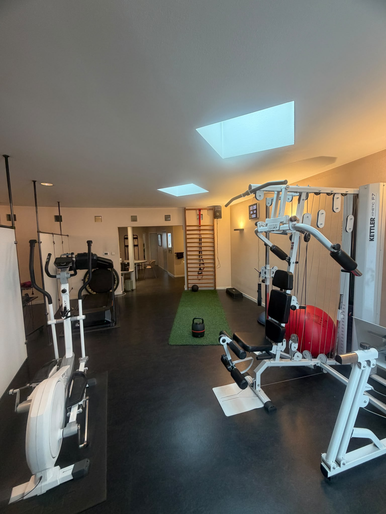
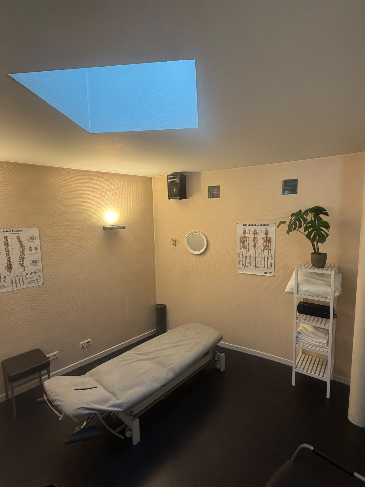
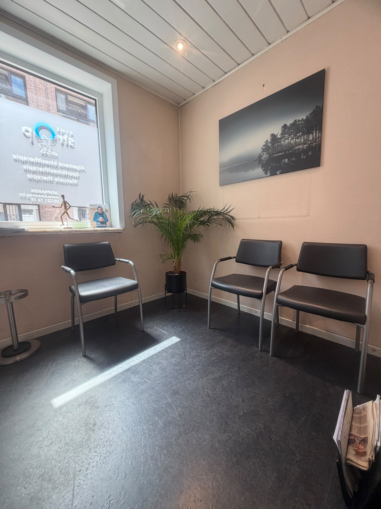
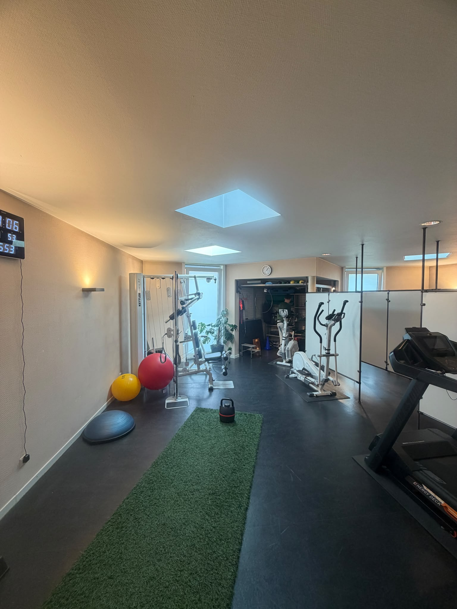
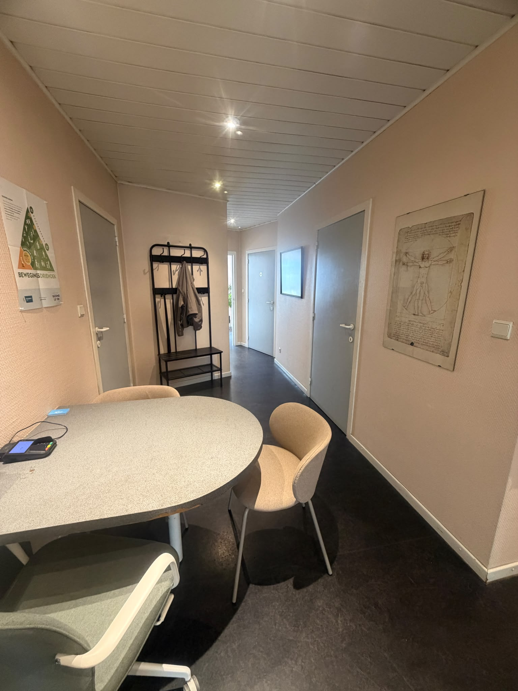
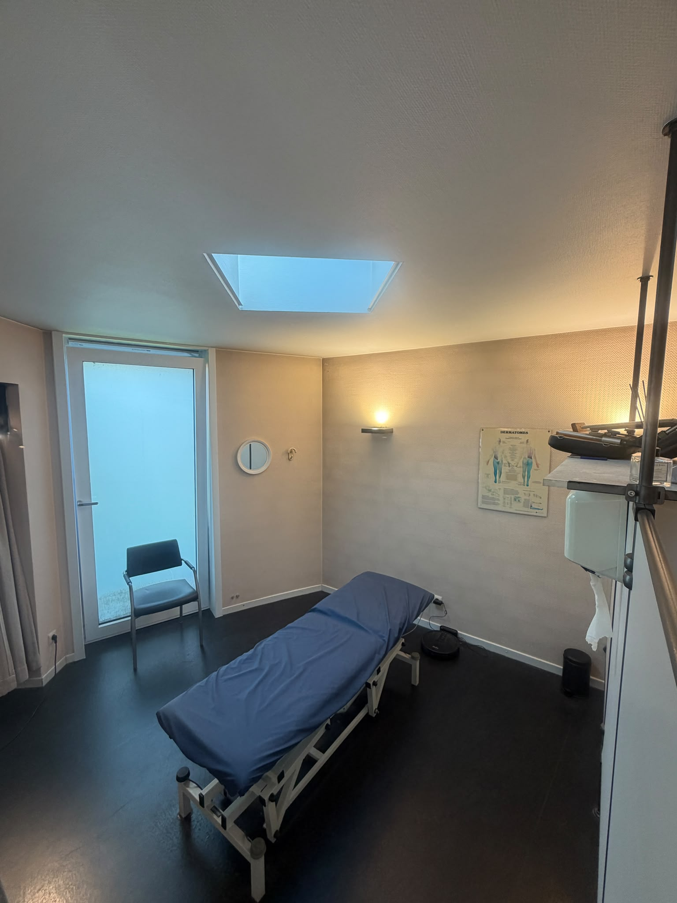

Samen bouwen aan jouw herstel. Actief, onderbouwd en op jouw tempo.
Bij Kine Strop nemen we ruim de tijd om jouw verhaal te horen en stippelen we samen een haalbaar behandelplan uit. Of het nu gaat om acute spier- en gewrichtsklachten, revalidatie of langdurige pijn: jij zit aan het stuur, wij helpen navigeren.

De koffie staat klaar
Geen overhaaste consults, maar ruimte voor jouw verhaal.
Herstel is een samenwerking, geen eenrichtingsverkeer
Of je nu kampt met acute blessures, aanslepende rugklachten of zoekende bent bij langdurige pijn: we geloven niet in snelle wondermiddeltjes of passief afwachten.
Duurzaam herstel begint bij begrijpen wat er in je lichaam en zenuwstelsel gebeurt. We combineren doordachte manuele behandeling met gerichte, haalbare oefeningen voor thuis en in de praktijk.
Persoonlijke intake
We nemen ruim de tijd om jouw volledige voorgeschiedenis, doelen en verwachtingen grondig te begrijpen.
Stapsgewijze opbouw
In plaats van beweging te vermijden, bouwen we je belastbaarheid, kracht en bewegingsvertrouwen weer geleidelijk op.
"Pijn is meer dan enkel een sensatie in weefsel. Het is een beschermingssignaal van je zenuwstelsel dat samengaat met je gedachten, gevoelens en ervaringen. Onze job is om dat signaal samen weer te kalmeren."

Waarmee kunnen we je helpen?
Van acute klachten tot langdurige pijn: doordachte zorg afgestemd op jouw noden.
Oefentherapie & Sportkinesitherapie
Doelgerichte revalidatie na sportblessures, operaties of bij overbelasting. Geen klakkeloze oefenschema's, maar educatie, motivatie en gedragsverandering op maat.
Manuele therapie
Gespecialiseerde zorg voor wervelkolom en gewrichten. Zachte mobilisaties bij lage rugpijn, nekstijfheid, hoofdpijn en gewrichtsblokkades.
Chronische pijn, fibromyalgie & CVS
Pijneducatie, energiemanagement (pacing) en zeer geleidelijke heropbouw bij aanhoudende pijn, CVS, fibromyalgie en overprikkeling.
Dry needling
Ondersteunende behandeling bij hardnekkige spierkrampen en triggerpoints. Nooit als losse 'quick fix', maar geïntegreerd in een actief herstelplan.
Maak kennis met ons team
Twee therapeuten met een gedeelde visie op onderbouwde, menselijke en laagdrempelige zorg.
Egon Seldeslachts
Gespecialiseerd in manuele therapie, chronische pijneducatie en gedragsverandering. Egon helpt je begrijpen wat er in je lichaam en zenuwstelsel omgaat voor een duurzaam herstel.

Mathias Heene
Gepassioneerd door manuele therapie, dry needling, chronische pijnbegeleiding en actieve sportrevalidatie. Begeleidt patiënten met enthousiasme naar hun persoonlijke bewegingsdoelen.
Sfeervol, rustig en uitgerust voor herstel
Onze praktijkruimte aan de Sint-Coletastraat 9 te Gent — klik op een foto voor vergroting.






Beoordelingen op Google Maps
Lees de authentieke en verifieerbare ervaringen van patiënten op ons officiële Google bedrijfsprofiel in Gent.
Tarieven & RIZIV Conventie
Overzicht van onze tarieven, terugbetalingen via het ziekenfonds en ons conventiestatuut.
Conventiestatuut & Tarievenoverzicht
Onze praktijk is gedeconventioneerd. Voor patiënten zonder verhoogde tegemoetkoming geldt een vast honorarium van € 37,00 per behandelzitting.
Verhoogde tegemoetkoming: Patiënten met een verhoogde tegemoetkoming (VT) worden steeds aangerekend volgens de officiële RIZIV-tarieven (€ 31,64 per zitting). Zo blijft kwalitatieve kinesitherapie voor iedereen toegankelijk.
* Voor huisbezoeken geldt een verplaatsingsvergoeding van € 3,00.
Praktische informatie & FAQ
Hier vind je een antwoord op de meest voorkomende vragen in verband met de praktijk en de behandelingen op kinestrop.be.
Ja, zonder voorschrift van een arts kan er geen terugbetaling gebeuren van het ziekenfonds. Ga dus steeds eerst langs bij uw huisarts of specialist als u klachten heeft.
Via het tabblad 'Contact' vindt u de praktische informatie over het maken van een afspraak. Nieuwe patiënten worden gevraagd naast het voorschrift ook zeker hun identiteitskaart (eID) mee te brengen bij de eerste afspraak.
Onze praktijk is gedeconventioneerd (€ 37,00 per behandeling voor patiënten zonder verhoogde tegemoetkoming). Patiënten met een verhoogde tegemoetkoming (VT) worden steeds aangerekend volgens de officiële RIZIV-tarieven (€ 31,64 per zitting). Bekijk onze volledige tarieventabel en het document op deze pagina. Voor huisbezoeken komt er € 3,00 verplaatsingsvergoeding bij.
Ja, de praktijk is via de straat zonder problemen toegankelijk met een rolstoel.
De praktijk is gemakkelijk te bereiken met het openbaar vervoer. Op 20 meter van de praktijk bevindt zich een bushalte voor buslijnen 5a en 5b. Met de auto kan u in de hele straat parkeren en voor wie met de fiets komt, is er een openbare fietsenstalling aan de overkant van de straat.
Ja, huisbezoeken zijn mogelijk wanneer het voor u niet mogelijk is om naar de praktijk te komen. Dit kan binnen een straal van 1 km rond de praktijk.
Om kosteloos te annuleren, vragen we ten laatste 24u op voorhand te verwittigen. Dit kan telefonisch of in het weekend per mail. Bij ziekte 's ochtends verwittigt u liefst vóór 9u. Indien u laattijdig verwittigt, zal een administratieve kost van €20 worden aangerekend.
Lokale partners & netwerk
Voor een optimale zorgomgeving werken wij nauw samen met deskundige partners en multidisciplinaire praktijken in Gent.
Groepspraktijk Gent
Multidisciplinaire PraktijkEen gewaardeerde partner bij ons in de buurt (Zwijnaardsesteenweg 51, Gent). Een deskundig multidisciplinair team van psychologen, psychotherapeuten, diëtisten, logopedisten en bemiddelaars voor zorg-op-maat.